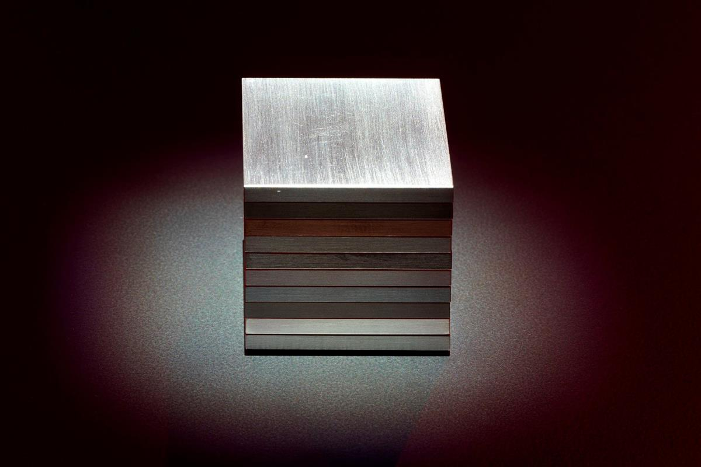

Alfredo Jaar. The End of the World, 2024, installation view, Kesselhaus, KINDL, © Alfredo Jaar / VG Bild-Kunst, Bonn, 2024, photo: Jens Ziehe
ON SOURCE: KINDL - BERLIN
15.9.24 – 1.6.25
ALFREDO JAAR
The End of the World
Kesselhaus
Alfredo Jaar (* 1956 in Santiago de Chile, lives in New York) is an artist, architect, and filmmaker. For over 40 years, he has examined complex sociopolitical issues and the limits and ethics of representation. For the Kesselhaus at the KINDL, he has created a new site-specific installation that reflects on the current state of our world. Drawing from a five-year research project on our ailing planet, the artist presents his critical assessment of the ecological and political crises facing our present and future.
Curator: Kathrin Becker
Alfredo Jaar. The End of the World, 2024, installation view, Kesselhaus, KINDL, © Alfredo Jaar / VG Bild-Kunst, Bonn, 2024, photo: Jens Ziehe
Discursive Programme
9.3., 15:00 – 16:00
Family workshop on Alfredo Jaar. The End of the World
For children aged 3+ with their loved ones
In German
Registration and costs
12.4., 16:00
The End of the World
Lecture by Alfredo Jaar
Introduction by Adam Bobbette (Political geologist and geographer, Glasgow)
In English - Free Admission
11.5., 15:00 – 16:00
Family workshop on Alfredo Jaar. The End of the World
For children aged 3+ with their loved ones
In German
Registration and costs

Alfredo Jaar. The End of the World, 2024, installation view, Kesselhaus, KINDL, © Alfredo Jaar / VG Bild-Kunst, Bonn, 2024, photo: Jens Ziehe
Human misery is his profession. For his art, Alfredo Jaar goes where it hurts: gold mines, toxic waste dumps, genocide sites. Since the early 1980s, he has used interventions, photographs and films to confront the public with often suppressed social catastrophes, political failure and media representation. With his conceptual, mostly installation-based works, Jaar is considered a pioneer in criticising Western ignorance and the manipulative flood of images. [Das menschliche Elend ist sein Metier. Alfredo Jaar geht für seine Kunst dorthin, wo es weh tut: Goldminen, Giftmülldeponien, Stätten eines Genozids. Seit den frühen 1980er-Jahren nutzt er Interventionen, Fotografien und Filme, um das Publikum mit oft verdrängten sozialen Katastrophen, politischem Versagen und medialer Repräsentation zu konfrontieren. Mit seinen konzeptuellen, meist installativen Werken gilt Jaar als Pionier in Sachen Kritik an westlicher Ignoranz und manipulativer Bilderflut.]
Ina Hildebrandt, Tip Berlin, 9/2024
The veins of our globalized lives are made from precious metals and minerals. Cobalt is what allows our emojis to be delivered to our family WhatsApp group. Copper keeps Teslas on the road and germanium keeps satellites in the sky. Tin is used to make solder, which conducts electricity. We need platinum to produce much-desired clean hydrogen, for electronics and semiconductors. Manganese is vital for rechargeable batteries, as are lithium and nickel. As digitalization progresses and with the energy revolution underway, demand will only rise. (...) These materials appear innocent in the form of a sculpture, yet nevertheless, they almost invisibly determine destinies around the world. Politicians say that we are doomed if we fail to extract these natural resources. But many individuals who live in the places where these coveted resources lie dormant in the ground are already losing out. [Die Adern unseres globalisierten Lebens sind aus wertvollen Mineralien und Metallen gemacht. Kein Emoji erreicht die WhatsApp-Familiengruppe ohne Kobalt, kein Tesla fährt ohne Kupfer. Satelliten werden mit Germanium betrieben. Aus Zinn wird Lötzinn, und durch Lötzinn fließt Strom. Platin brauchen wir für den begehrten grünen Wasserstoff, für Elektronik und Halbleiter. Mangan für Akkus, genauso wie Lithium und Nickel. Und der Bedarf steigt mit der weiteren Digitalisierung und dem Fortschreiten der Energiewende. (...) Ein Material, das als Skulptur unschuldig wirkt, aber dennoch – beinah unsichtbar – Schicksale auf der ganzen Welt bestimmt. Wenn wir bei der Beschaffung dieser Bodenschätze versagen, sind wir verloren, sagt die Politik. Verloren haben indes schon viele Menschen, die dort leben, wo die begehrten Ressourcen im Boden schlummern.]
Daniel Völzke, Monopol, 9/2024
Further Material:Booklet Alfredo Jaar. The End of the World
ON SOURCE: KINDL - BERLIN